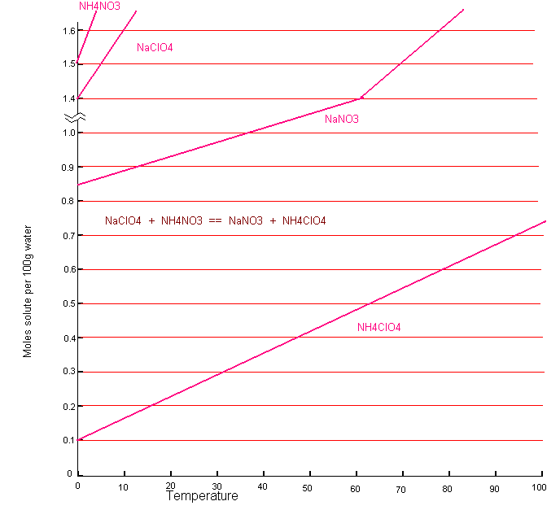

| Molecular weights | |||
|---|---|---|---|
| NH4ClO4 | NaNO3 | NH4NO3 | NaClO4 |
| 117.5 | 85 | 80 | 122.5 |
The graph below shows the solubility's of the relevant salts. The 'stable pair' is Ammonium Perchlorate and Sodium Nitrate. The solubility's of theses two salts are fairly far apart and you will be able to get a crop of Ammonium Perchlorate from the solution. I do not have the mutual solubility graph of the stable pair but you will be able to work at about 0.6 moles and dissolve in the Sodium Perchlorate and Ammonium Nitrate above 80C. The Ammonium Perchlorate will come out of solution as you cool to zero or below. You should cool slowly to get large crystals of Ammonium Perchlorate which will wash easily.
So for every 100ml water dissolve in 0.6 moles (73.5g) Sodium Perchlorate and 0.6 moles (48g) of Ammonium Nitrate and dissolve in the water at 80C. Cool slowly to about -10 to obtain your Ammonium Perchlorate.
Ammonium Nitrate can be difficult to dry or it may have inert filler in it. It may be handier to work with a 50% solution and not isolate the Ammonium Nitrate as a solid. Don't forget to include the water that is in the Ammonium Nitrate solution when you are deciding how much water to use in the double decomposition reaction.
When the solution has reached your chosen temperature pour or siphon off as much of the clear(ish) liquid as possible and put into a seperate container. Sometimes the inert filler is very fine and some will still be suspended in the solution but you will be able to get rid of it later. Don't be tempted to be greedy and contaminate your clear(ish) solution with much of the solid material that is at the bottom of the container that you are siphoning from. The solution that you have siphoned (or poured) off will be a certain percentage of Ammonium Nitrate as shown in the table. ie. if you let your solution cool to 20C it will have 65.5g Ammonium Nitrate per 100g of solution. The particular temperature you choose is up to you. The more you cool, before siphoning, the more Ammonium Nitrate will come out of solution and you may feel you are wasting Ammonium Nitrate and may wish to sipnon off at one of the higher temperatures. As stated above, make sure that Ammonium Nitrate is actually precipitating in long needles at your chosen temperature before you start to siphon.
| Temperatures, %wt & amount of water per gram solution to add to get a 50%wt solution | ||
|---|---|---|
| Temperature | Weight % | Grams water to add per gram solution |
| 30 | 70.4 | 0.408 |
| 25 | 68.2 | 0.364 |
| 20 | 65.5 | 0.31 |
Weigh the clear(ish) solution that you have obtained by siphoning (or
pouring) and for every gram of solution that you have add the amount of water
that it says to add in the table. For example if you have a total weight of
1670g of solution, and you let your solution cool to 20C before siphoning off
the clear(ish) liquid then you should add 1670 * 0.31 = 518 grams of water to
the solution to obtain 1670 + 518 = 2188g of solution. Stir and dissolve any
Ammonium Nitrate that may have came out of solution. You will now have a 50%
solution of Ammonium Nitrate for the next stage of the process. Put the solution
in a tallish container with a lid and if there is any suspended filler still in
it, it will fall to the bottom after about 24 hours. You can then siphon (or
pour carefully) the now perfectly clear solution of 50% Ammonium Nitrate for the
next stage of the process. Save it in a container with a lid, you don't have to
use it all at once.
If you have pure Ammonium Nitrate to start with you
don't have to bother with the 50% solution, you can just use as is.
The
remainder of the Ammonium Nitrate that was left in the heating container can be
discarded if your Ammonium Nitrate has inert filler in it, or if your Ammonium
Nitrate was pure (If you are using freezer packs) you can save it for the next
time you want to make up a 50% solution of Ammonium Nitrate. Don't throw in
drains etc. Dilute it with plenty of water and spread it on grass.
When using a 50% Ammonium Nitrate solution work as follows:
Take 52ml water and dissolve 73.5g of Sodium Perchlorate in it. Heat the solution to about 80C. Take 96g of 50% Ammonium Nitrate solution and and heat to 80C and add the two solutions. You will now have 0.3 moles of Sodium Perchlorate and Ammonium Nitrate in 100ml of water as per the first example. Cool slowly and filter of Ammonium Perchlorate

HIT THE BACK BUTTON ON YOUR BROWSER